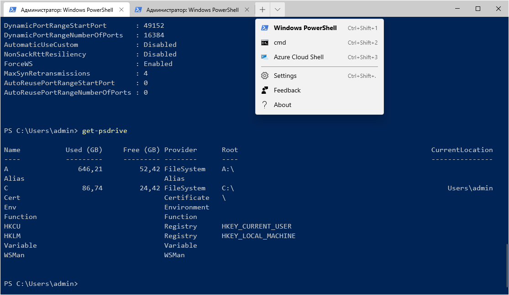
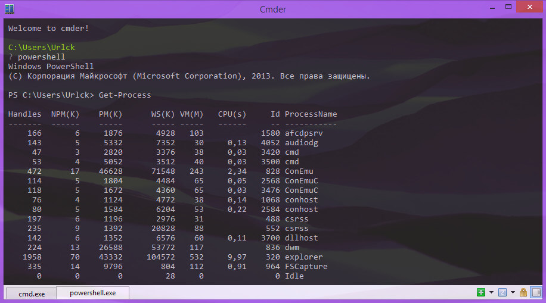
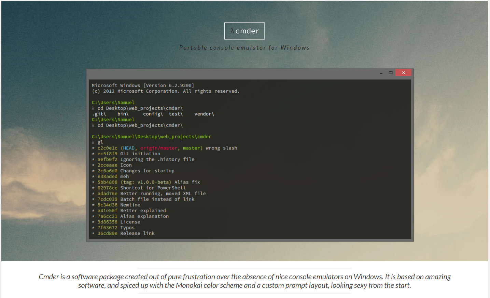
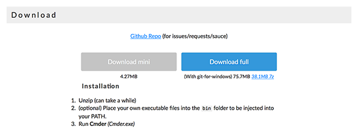
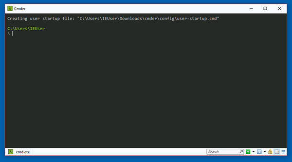
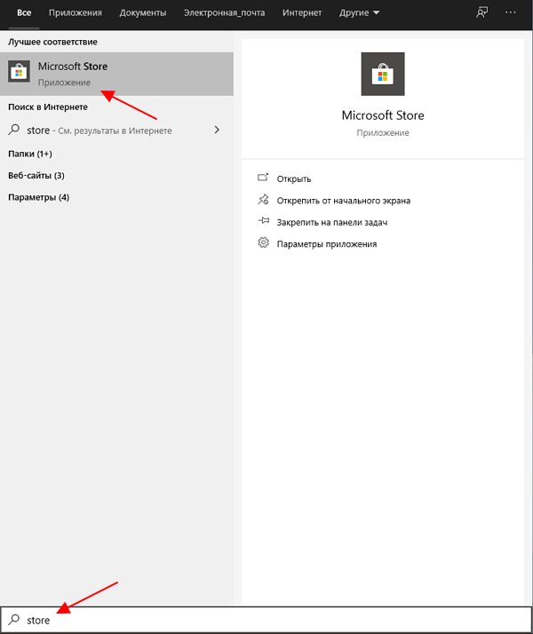
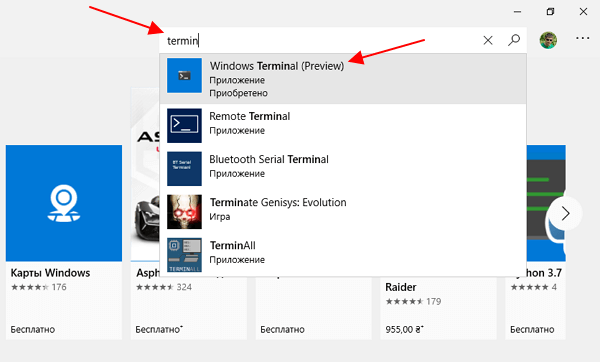
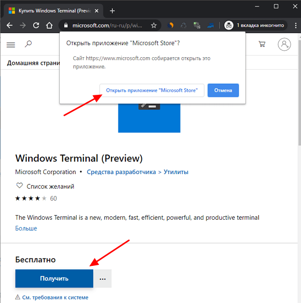
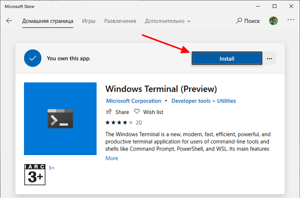

Установка Командной строки
В операционной системе Microsoft Windows есть предустановленный терминал, который называется cmd.exe. Использовать его в качестве основного терминала не рекомендуется, так как его возможности не так широки, как у аналогов. Для стандартного терминала Windows существует две альтернативы в виде эмуляторов консоли под названием cmder и Windows Terminal.
О эмуляторах
Windows Terminal — приложение Терминал от Microsoft. Предлагает вкладочный интерфейс и объединяет инструменты Командная строка (CMD), PowerShell, Azure Cloud Shell и Подсистема Windows для Linux (WSL)
Cmder — это эмулятор консоли, который отличается простотой и удобством работы. В отличие от стандартной командной строки cmd в Windows, данная программа предоставляет больше функционала, а ее интерфейс удобнее и привлекательнее. По сути, Cmder — это целый программный пакет, который включает командную строку, консоль, макрос и DosBox.
Установка CMDER
Скачать cmder можно на официальном сайте http://cmder.net/.
На сайте есть две версии для скачивания: минимальная и полная.
Полная отличается от минимальной тем, что в неё вшита поддержка системы контроля версий git. Скачиваем необходимую версию в виде архива и распаковываем его. Cmder не требует установки. Достаточно запустить файл «cmder.exe».
Запущенная командная строка cmder должна выглядеть следующим образом.
В вашем случае внешний вид может отличаться, в зависимости от настроек системы.
Установка Windows Terminal
На данный момент Windows Terminal уже можно установить через магазин приложений Microsoft Store. Чтобы запустить данный магазин откройте меню «Пуск», введите в поиск слово «store» и запустите найденную программу.
После запуска Microsoft Store, в нем нужно найти приложение Windows Terminal (Preview). Для этого можно воспользоваться поиском по магазину приложений. Введите в поисковую строку слово «terminal» и нажмите на верхнее приложение.
Если с поиском возникают трудности, то можете воспользоваться веб-версией магазина Microsoft. Здесь нужно будет нажать на кнопку «Получить» и подтвердить переход в приложение.
Так или иначе, вы попадете в Microsoft Store на страницу приложения Windows Terminal (Preview). Здесь нужно нажать на кнопку «Install» и дождаться завершения установки приложения.
После установки можно сразу начинать пользоваться Windows Terminal, перезагрузка компьютера не требуется. Чтобы запустить приложение нужно нажать на кнопку «Launch» в Microsoft Store или воспользоваться поиском в меню «Пуск».